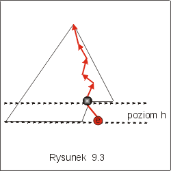
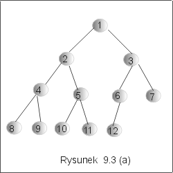
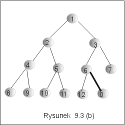
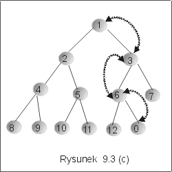
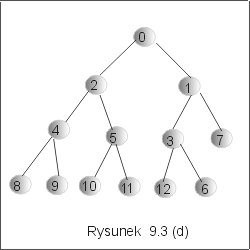

| « poprzedni punkt | nastêpny punkt » |
Niech Heap oznacza zbiór kopców etykietowanych elementami zbioru Et. Operacja wstawiania insert ma nastêpuj±c± sygnaturê:
insert : Et ´ Heap ® Heap.
Tak, jak w przypadku struktur drzewiastych BST I AVL, wymagamy, aby operacja insert spe³nia³a dla dowolnych eÎEt i HÎHeap, specyfikacjê:
insert(e,H) Î Heap
(member(e,H) ® H = insert(e,H)) Ù (Ø member(e,H) ® member(e,insert(e,H))),
gdzie member jest relacj± zachodz±c± miêdzy elementem i kopcem odpowiadaj±c± na pytanie, czy element nale¿y, czy nie nale¿y do kopca.
Idea algorytmu wstawiania elementu e do kopca H polega na tym, by zachowaæ strukturê drzewa doskona³ego kosztem uporz±dkowania. Odtworzenie tej struktury jest du¿o trudniejsze, gdy¿ dotyczy ca³ego drzewa, ni¿ poprawienie etykietowania, które dotyczy tylko jednej ¶cie¿ki. Je¶li zapomnimy na chwilê o uporz±dkowaniu drzewa, to naturalnym miejscem, do którego mo¿emy dowi±zaæ nowy wierzcho³ek jest pierwszy niekompletny wêze³ na przedostatnim poziomie drzewa, o ile taki istnieje, i pierwszy z lewej li¶æ, w przeciwnym przypadku (por. rysunek 9.1(a)).
Metoda.
|
 |
Przyk³ad 2.1
Na rysunku 9.3(a) przedstawiono przyk³ad kopca o wysoko¶ci 3. Chcemy do³±czyæ do tego kopca etykietê 0. Pierwszy krok polega na dowi±zaniu nowego wierzcho³ka z etykiet± 0 jako prawego syna wierzcho³ka z etykiet± 6. Jest to w³a¶nie pierwszy z lewej wierzcho³ek na przedostatnim poziomie, który nie ma kompletu synów. W wyniku otrzymali¶my drzewo doskona³e (por. rysunek 9.3(b), ale bez w³asno¶ci czê¶ciowego uporz±dkowania.
|  |  |
Stwierdzamy to porównuj±c nowowstawiony element z etykietê jego ojca. Poniewa¿ 6>0, wiêc zamieniamy miejscami te etykiety. Jedna zamiana jednak nie wystarczy i musimy jeszcze zamieniæ 0 z 3 i 0 z 1, jak pokazano na rysunku 9.3(c). Ostatecznie otrzymamy kopiec przedstawiony na rysunku 9.3 (d). J
|  |  |
Koszt operacji wstawiania
Zgodnie z opisanym algorytmem, kroki 1-2 maj± koszt sta³y. Poprawienie uporz±dkowania dotyczy tylko jednej ¶cie¿ki od nowowstawionego wierzcho³ka do korzenia (w najgorszym razie). Wynika st±d, ¿e koszt operacji wstawiania mo¿na oszacowaæ z góry przez wysoko¶æ drzewa. Zgodnie z lematem 1.2, jest on wiêc równy T(n) = O(lg n), dla drzewa o n wierzcho³kach.
Uwaga. Implementacja przedstawionego algorytmu na drzewie sprawia trochê k³opotów. Po pierwsze, musimy w ka¿dym wê¼le pamiêtaæ referencjê do wierzcho³ka ojca. Po drugie, musimy znale¼æ wierzcho³ek, do którego nale¿y dowi±zaæ nowy element. Pamiêtanie jednej referencji do tego wierzcho³ka nie wystarczy, bo po kolejnych wstawieniach trzeba j± uaktualniæ. Natomiast pamiêtanie w ka¿dym wê¼le referencji do najbli¿szego "nastêpnika" z prawej wymaga sporo dodatkowej pamiêci. O implementacji algorytmu wstawiania bêdzie mowa w dalszej czê¶ci wyk³adu.
Pytanie 2: Czy dla dowolnego kopca, ci±g etykiet wierzcho³ków wypisanych w porz±dku "wszerz" jest uporz±dkowany rosn±co?
| « poprzedni punkt | nastêpny punkt » |